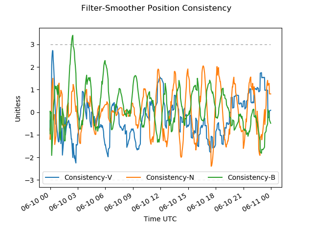

Go to your <GMAT Installation>/output directory. You should have the filter files we saw previously, and two new files there – smoother.txt and smoother.mat. Let’s start with smoother.txt.
Open smoother.txt for reading in a text editor.
The smoother.txt file is identical in format to the filter output file. At the top, we see the smoother initial conditions. Notice now that the starting state for the backward filter is the ending state for the filter forward run. The force modeling, spacecraft hardware, measurement modeling are the same as those used in the forward filter.
The SMOOTHER MEASUREMENT RESIDUALS is also identical in format to the FILTER MEASUREMENT RESIDUALS report. The smoother residuals report shows the measurement residuals versus states computed from the smoother. For this reason they are reported in forward time order. The smoother operates in forward time order when fusing the forward and backward filter runs. Residuals from the backward filter run are not included by default in the smoother output report, but are included in the smoother MATLAB file.
Next in the smoother output report are the smoother measurement summary statistics. Again, the report format is identical to that found in the filter. As in the filter, we should expect to see most of the measurements accepted. Under certain circumstances, the backward filter can diverge and edit out large amounts of measurement data, so the analyst should carefully review the smoother output to be certain this did not occur.
Next comes the smoother state information. This is the smoother state at the end time of the measurement data, and it therefore matches the filter end state exactly. Remember that the backward filter starts at the end time of the forward filter, so the backward filter, the forward filter, and consequently the smoother, all match at the last measurement.
Lastly comes the SMOOTHER COVARIANCE REPORT. This is again identical in format to the filter covariance report, but instead reporting the smoother covariance. The function of the smoother is to improve the accuracy of the estimated states and due to the mathematics of the smoother, the smoother covariance is always smaller than the covariance of the forward filter. This may be difficult to see in the smoother output report, but it will be clearer when we examine plots of results from the smoother MATLAB file. Let’s do that now.
If you are not there already, open a DOS prompt and navigate to the directory containing the sample Python analysis scripts.
In that directory, type the following:
python plot_covariance.py <full path to smoother.mat>
In a few seconds, you should see a plot similar to that below. Compare this to the plot we previously generated for the filter position covariance and note the differences. This plot does not exhibit the “converging” behavior in the previous forward filter plot, and all the components of uncertainty are at least a little smaller than those from the forward filter. This reflects the fact that each point in the smoother contains information obtained from measurements both in the past and in the future of that point. By contrast, each point in the forward filter run contains only information from the past of that point, since the forward filter only processes measurements forward in time. Having more information about the state at a particular point in time (in this case derived from both the past and future trajectory of that point) improves knowledge of the state and therefore reduces the uncertainty of the state.
We notice as well as considerable U-shape to the V-component of uncertainty. The other components also show signs of being noisier at the beginning and end of the span. This is again a consequence of how the smoother operates. States near the start of the span have a lot of information from the backward filter, but not much from the forward filter. Similarly, states near the end have a lot of information from the forward filter, but not much from the backward filter. States near the center of the run have the greatest amount of information from both the forward and backward filter and therefore have the smallest uncertainty.
In the script directory, type the following:
python plot_solve_fors.py <full path to smoother.mat>
After a few seconds, you should see a plot similar to the one below. This displays the smoother estimate of the coefficient of drag.
The envelope of uncertainty around the smoother Cd estimate shows behavior similar to that in the smoother plots for position and velocity. Near the start and end of the run, there is less information about the estimate, and therefore more uncertainty, than near the center.
The last step in QA of the filter and smoother run requires us to generate what are called “filter-smoother consistency plots”. We now have two complete forward estimated time histories of the spacecraft state – the state estimates we got from the forward filter, and the state estimates from the forward smoother (after backward filtering). These plots will allow us to see if the filter state estimate and uncertainty are “consistent” with the smoother state estimate and uncertainty. In other words, if the forward filter places the spacecraft at a certain location with a particular uncertainty, is the smoother state and its uncertainty reasonably within bounds of the filter state and uncertainty?
As an example, consider a case where the filter estimate places the spacecraft at point A with an uncertainty of 10 meters. Now let’s say the smoother estimate at the same time places the spacecraft at point B with an uncertainty of 5 meters. If the distance between point A and B is 7 meters, then we can say that the filter estimate is “consistent” with the smoother estimate. The distance between point A and point B is within the uncertainties of the locations of point A and point B.
On the other hand, let’s consider the case where point A (with 10 meters uncertainty) and point B (with 5 meters uncertainty), are found to be 100 meters apart. This error in estimated location between the filter (point A) and the smoother (point B) is much larger than should be expected based on the reported uncertainties of each estimate. In this case, we would say that the filter and smoother estimates are not consistent, and should begin to look for sources of modeling error in either the filter or smoother. The filter-smoother consistency plot will perform this comparison for us at every point over the entire span of the run and generate a plot showing a metric that represents the level of consistency between the filter and smoother runs.
In the script directory, type the following:
python filter_smoother_consistency.py <full path to filter.mat> <full path to smoother.mat>
After a few seconds, you should see a plot similar to the one below. This displays the filter-smoother position consistency.
|  |
This plot shows the filter-smoother consistency for the components of the spacecraft position vector in a VNB frame. The plot for velocity consistency is similar. You should also review the filter-smoother consistency of all other estimated parameters. The script should also have generated a consistency plot for the coefficient of drag. Since Cd is just a scalar value, the Cd consistency plot shows only one data series. The consistency metric measures the filter and smoother state differences against their uncertainties, so we expect, in a well-tuned filter, to see the majority of the metric in the ±3 range. If this is not the case, you should begin examining the filter configuration. Possible sources of poor filter-smoother consistency are things like poor force modeling, unknown or unmodeled forces like thrusting events, excessive data editing, and inappropriately tuned state noise or FOGM variables.